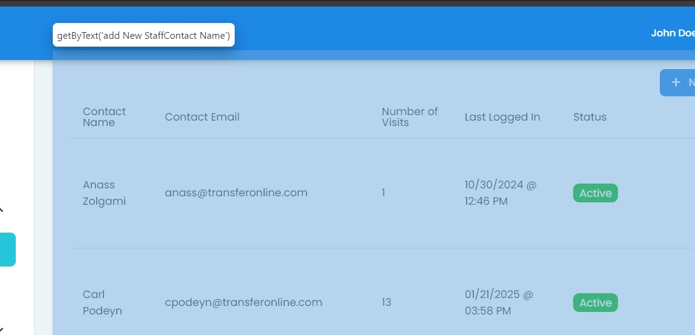
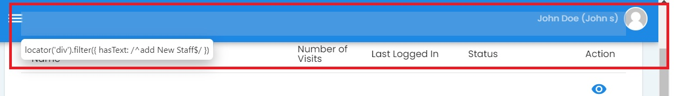

checkPageSpecificFields#
Function: checkPageSpecificFields(page, pageFieldHeading, otherFieldLocator)
The checkPageSpecificFields function is meant to be more flexible in that you can pass in page specific fields to the function and have it check to see if they exist on the page.
Source Code
export async function checkPageSpecificFields(
page: Page,
pageFieldHeading: string,
otherFieldLocator: string
): Promise<void> {
// 1) The heading (e.g. "Staff List")
await expect(page.getByRole('heading', { name: pageFieldHeading })).toBeVisible();
await page.getByRole('heading', { name: pageFieldHeading }).click();
// 2) The main area
await expect(page.getByRole('main')).toBeVisible();
await page.getByRole('main').click();
// 3) The text that includes `${otherFieldLocator}Contact Name`
// IMPORTANT: Use backticks for string interpolation
await expect(page.getByText(`${otherFieldLocator}Contact Name`)).toBeVisible();
await page.getByText(`${otherFieldLocator}Contact Name`).click();
// 4) The "div" with text matching `^${otherFieldLocator}$` (a RegExp)
// Use new RegExp to dynamically build your regex
const dynamicRegex = new RegExp(`^${otherFieldLocator}$`);
await expect(page.locator('div').filter({ hasText: dynamicRegex })).toBeVisible();
await page.locator('div').filter({ hasText: dynamicRegex }).click();
// 5) Again "`${otherFieldLocator}Contact Name`"
await expect(page.getByText(`${otherFieldLocator}Contact Name`)).toBeVisible();
await page.getByText(`${otherFieldLocator}Contact Name`).click();
}
{kind=link}
Options#
Options
- :pageFieldHeading: str (str)#
Pass the page field heading through as a string.
- :otherFieldLocator: str (str)#
Pass the other field locator through as a string.
Example: Selecting Fields Found on Staf List Page#
The Staff List page has fields hidden throughout the page. There is a common pattern in the fields. It seems like the pages have common field names where the name of the page is placed directly in front of the button or other type of selector.
Here is an example of how Playwright sees the fields associated with the larger area of the page:
{kind=link}
And here is an example of how Playwright see the fields associated with the header bar for each specific homepage:
{kind=link}
The String attached to “Contact Name” for any of the home pages throughout CIT (where the homepage is mostly a table) will be known as the
pageFieldHeading.The String attached to the top bar for any of the home pages throughout CIT (where the homepage is mostly a table) will be known as the
otherFieldLocator.
Parameters Chosen
pageSpecificHeading = 'Staff List',
pageSpecificLocator = 'add New Staff',